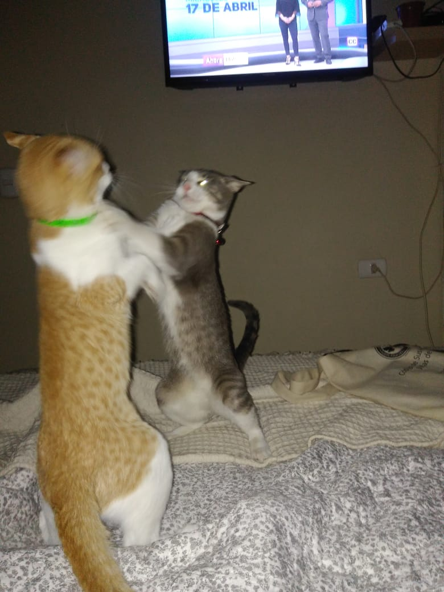
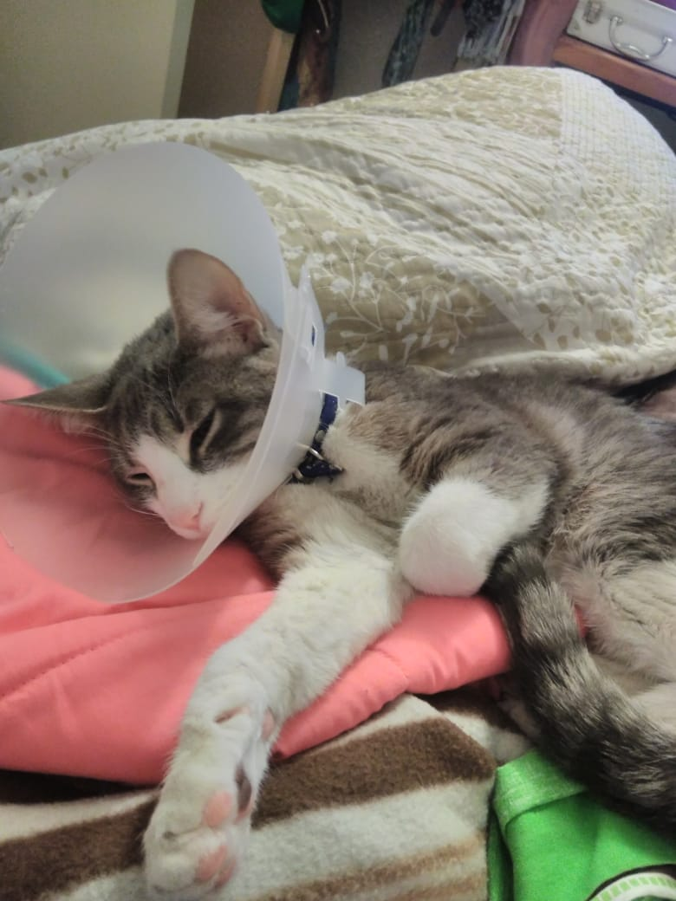
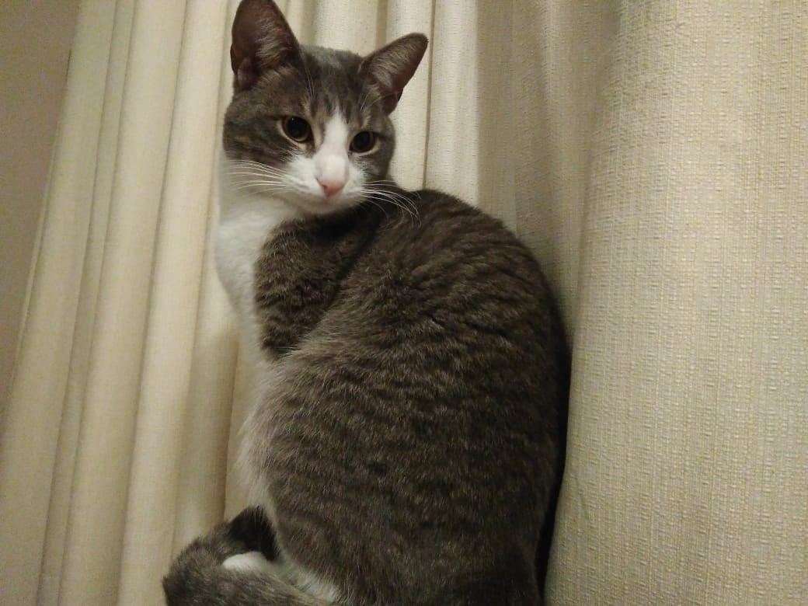
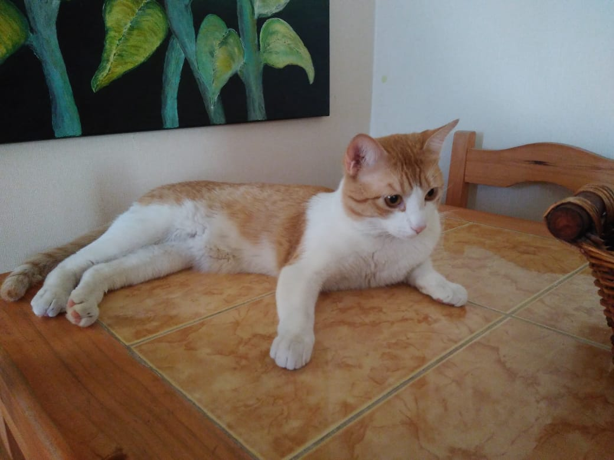
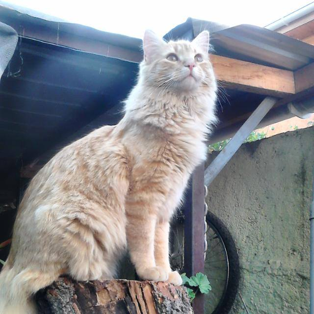

Gatos disponibles* para adopcion
*no todos los gatos tienen stock
Gatos disponibles para la adopcion (en algunos casos) todos vacunados (quizas) y con microchip (en ciertos casos)
 M'aiq solo puede ser adoptado junto con Deeja
 el 95,4% de nuestras Deejas estan esterilizadas
Deeja Espino negro
- 
- Deeja es una hembra raza americano de pelo corto de 4 años, esterilizada y con microchip id 196
M'aiq el mentiroso
M'aiq es un americano de pelo corto, macho de 2 años, operado y con microchip id 301
solo puede ser adquirido junto con Deeja.
Viruta
Viruta es un americano de pelo largo de 4 años, macho, vacunado y con microchip id 192
de momento no queda stock, pero contactese con el personal para mas informacion.